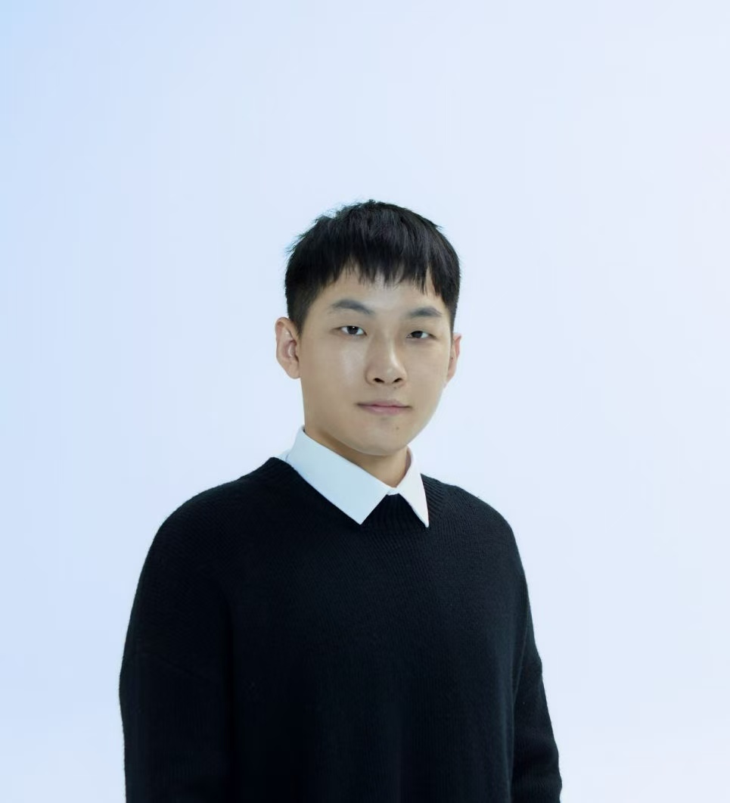

SCIS 2026
DataXman: Selecting and Mixing Pretraining Data via Bilingual Mixture-of-Experts Data Manager
Ru Peng, Jinyang Zhang, Yawen Zeng, et al., Haobo Wang*, et al.

Assistant Professor · PhD Supervisor
School of Software Technology
Zhejiang University
My research aims to build intelligent systems that learn reliably from imperfect data, reason and act in complex environments, and work effectively with structured knowledge. My current interests include data-centric machine learning, LLM reasoning and agents, and table and structured data intelligence.
* Corresponding author
SCIS 2026
Ru Peng, Jinyang Zhang, Yawen Zeng, et al., Haobo Wang*, et al.
ICLR 2026
Shenzhi Yang, Guangcheng Zhu, Haobo Wang*, et al.
ICLR 2026
Zewei Yu, Lirong Gao, Sheng Guo, et al., Haobo Wang*
KDD 2026
Wentao Ye, Liyao Li, Zhiqing Xiao, et al., Haobo Wang*
ICML 2026
Xing Xi, Liyao Li, Hao Chen, et al., Haobo Wang*
ACL 2026
Yuhang Yang, Kai Tang, Chao Ye, Haobo Wang*, et al.
ACL Findings 2026
Shouqing Yang, Qi Zhang, Yuhang Yang, et al., Haobo Wang*, et al.
AAAI 2026
Wentao Ye, Jiaqi Hu, Haobo Wang*, et al.
NeurIPS 2025
Shenzhi Yang, Junbo Zhao, Sharon Li, et al., Haobo Wang*
NeurIPS 2025
Liyao Li, Chao Ye, Wentao Ye, et al., Haobo Wang, et al.
EMNLP 2025
Qi Zhang, Shouqing Yang, Lirong Gao, et al., Haobo Wang*, et al.
EMNLP Findings 2025
Liyao Li, Jiaming Tian, Hao Chen, et al., Haobo Wang, et al.
EMNLP Demo 2025
Maosheng Qin, Renyu Zhu, Mingxuan Xia, et al., Haobo Wang*
ACL 2025
Mingxuan Xia, Haobo Wang*, Sharon Li, et al.
ACL Findings 2025
Pengzuo Wu, Yuhang Yang, Guangcheng Zhu, et al., Haobo Wang*
VLDB 2025
Xuhang Zhu, Xiu Tang, Sai Wu, Jichen Li, Haobo Wang, et al.
Best of VLDB JournalICML 2025
Seongheon Park, Xuefeng Du, Min-Hsuan Yeh, Haobo Wang, Sharon Li
AAAI 2025
Ziquan Wang, Mingxuan Xia, Xiangyu Ren, et al., Haobo Wang*
ICLR 2025
Lin Long, Xijun Gu, Xinjie Sun, et al., Haobo Wang, et al.
NeurIPS 2024
Jianan Yang, Chenchao Gao, Zhiqing Xiao, Haobo Wang*, et al.
ACL 2024
Kai Tang, Junbo Zhao, Xiao Ding, et al., Haobo Wang*
ACL Findings 2024
Lin Long, Rui Wang, Ruixuan Xiao, et al., Haobo Wang*
EMNLP Findings 2024
Ruixuan Xiao, Wentao Ma, Ke Wang, et al., Haobo Wang*, et al.
KDD 2024
Cheng Peng, Haobo Wang*, et al.
ICML 2024
Mingxuan Xia, Zenan Huang, Runze Wu, et al., Haobo Wang*
CVPR 2024
Ruixuan Xiao, Lei Feng, Kai Tang, Junbo Zhao, Sharon Li, et al., Haobo Wang*
AAAI 2024
Mingxuan Xia, Junbo Zhao, Gengyu Lyu, et al., Haobo Wang*
WWW 2024
Chao Ye, Guoshan Lu, Haobo Wang, et al.
TPAMI 2024
Haobo Wang, Ruixuan Xiao, Sharon Li, et al.
TKDD 2024
Haobo Wang, Cheng Peng, Hede Dong, et al.
VLDB Demo 2024
Zhen Zhu, Yibo Wang, Shouqing Yang, et al., Haobo Wang*
NeurIPS 2023
Haobo Wang, Yiwen Dong, Ruixuan Xiao, et al.
IJCAI 2023
Ruixuan Xiao, Yiwen Dong, Haobo Wang*, et al.
1st Place, Learning and Mining with Noisy Labels ChallengeNeurIPS 2022
Haobo Wang, Mingxuan Xia, Sharon Li, et al.
ICLR 2022
Haobo Wang, Ruixuan Xiao, Sharon Li, et al.
Outstanding Paper Award Honorable MentionNeurIPS 2026
Guangcheng Zhu, Shenzhi Yang, Haobo Wang*, Xing Zheng, Yingfan Ma, Xuening Feng, Zhongqi Chen, Bowen Song, Weiqiang Wang, Gang Chen.
ICLR 2026
Shenzhi Yang, Guangcheng Zhu, Haobo Wang*, Xing Zheng, Yingfan Ma, Zhongqi Chen, Bowen Song, Weiqiang Wang, Junbo Zhao, Gang Chen.
ICLR 2026
Zewei Yu, Lirong Gao, Sheng Guo, Yuke Zhu, Bo Zheng, Junbo Zhao, Haobo Wang*.
ICML 2026
Xing Xi, Liyao Li, Hao Chen, Ningtao Wang, Peixian Chen, Peilin Tong, Xing Fu, Yu Cheng, Haobo Wang*, Gang Chen, Junbo Zhao, Ronghua Luo.
KDD 2026
Wentao Ye, Liyao Li, Zhiqing Xiao, Muzhi Zhu, Jiaqi Hu, Zhanming Shen, Xiaomeng Hu, Sean Du, Haobo Wang*.
ACL 2026
Yuhang Yang, Kai Tang, Chao Ye, Haobo Wang*, Qiqi Luo, Jin Guang Zheng, Zhixin Zhang.
EMNLP 2026
Xu Lu, Zhengqing Zang, Binhui Yao, Luwei Yang, Ruimin Chen, Zeng Wang, Haobo Wang*.
EMNLP 2026
Qi Zhang, Shen Huang, Liuchu, Shouqing Yang, Xiaomeng Hu, Pengjun Xie, Haobo Wang, Junbo Zhao.
AAAI 2026
Wentao Ye, Jiaqi Hu, Haobo Wang*, Xinpeng Ti, Zhiqing Xiao, Hao Chen, Liyao Li, Lei Feng, Sai Wu, Junbo Zhao.
ACL Findings 2026
Shouqing Yang, Qi Zhang, Yuhang Yang, Ruikang Xu, Yuwei Hou, Zhulin Jia, Lirong Gao, Haobo Wang*, Jinglei Chen, Jiexiang Wang, Sheng Guo, Bo Zheng, Gang Chen.
EMNLP Findings 2026
Qi Zhang, Zhaopeng Feng, Xiaonan Shi, Xiaomeng Hu, Liuchu, Pengjun Xie, Xiaobin Wang, Bryan Hooi, Haobo Wang, Junbo Zhao.
SCIS 2026
Ru Peng, Jinyang Zhang, Yawen Zeng, Kexin Yang, Junyang Lin, Haobo Wang*, Gang Chen, Jingren Zhou, Dayiheng Liu, Junbo Zhao.
NeurIPS 2025
Shenzhi Yang, Junbo Zhao, Sharon Li, Shouqing Yang, Dingyu Yang, Xiaofang Zhang, Haobo Wang*.
NeurIPS 2025
Liyao Li, Chao Ye, Wentao Ye, Yifei Sun, Zhe Jiang, Haobo Wang, Jiaming Tian, Yiming Zhang, Ningtao Wang, Xing Fu, Gang Chen, Junbo Zhao.
EMNLP 2025
Qi Zhang, Shouqing Yang, Lirong Gao, Hao Chen, Xiaomeng Hu, Jinglei Chen, Jiexiang Wang, Sheng Guo, Bo Zheng, Haobo Wang*, Junbo Zhao.
EMNLP Findings 2025
Liyao Li, Jiaming Tian, Hao Chen, Wentao Ye, Chao Ye, Haobo Wang, Ningtao Wang, Xing Fu, Gang Chen, Junbo Zhao.
EMNLP Demo 2025
Maosheng Qin, Renyu Zhu, Mingxuan Xia, Chenchenkai, Zhen Zhu, Minmin Lin, Junbo Zhao, Lu Xu, Changjie Fan, Runze Wu, Haobo Wang*.
ACL 2025
Mingxuan Xia, Haobo Wang*, Sharon Li, Zewei Yu, Jindong Wang, Junbo Zhao, Runze Wu.
ACL Findings 2025
Pengzuo Wu, Yuhang Yang, Guangcheng Zhu, Chao Ye, Hong Gu, Xu Lu, Ruixuan Xiao, Bowen Bao, Yijing He, Liangyu Zha, Wentao Ye, Junbo Zhao, Haobo Wang*.
VLDB 2025
Xuhang Zhu, Xiu Tang, Sai Wu, Jichen Li, Haobo Wang, Chang Yao, Quanqing Xu, Gang Chen.
Best of VLDB JournalICML 2025
Seongheon Park, Xuefeng Du, Min-Hsuan Yeh, Haobo Wang, Sharon Li.
ICLR 2025
Lin Long, Xijun Gu, Xinjie Sun, Wentao Ye, Haobo Wang, Sai Wu, Gang Chen, Junbo Zhao.
NeurIPS 2024
Jianan Yang, Chenchao Gao, Zhiqing Xiao, Haobo Wang*, Sai Wu, Gang Chen, Junbo Zhao.
ACL Findings 2024
Lin Long, Rui Wang, Ruixuan Xiao, Junbo Zhao, Xiao Ding, Gang Chen, Haobo Wang*.
EMNLP Findings 2024
Ruixuan Xiao, Wentao Ma, Ke Wang, Yuchuan Wu, Junbo Zhao, Haobo Wang*, Fei Huang, Yongbin Li.
CVPR 2024
Ruixuan Xiao, Lei Feng, Kai Tang, Junbo Zhao, Sharon Li, Gang Chen, Haobo Wang*.
WWW 2024
Chao Ye, Guoshan Lu, Haobo Wang, Liyao Li, Sai Wu, Gang Chen, Junbo Zhao.
TPAMI 2024
Haobo Wang, Ruixuan Xiao, Sharon Li, Lei Feng, Gang Niu, Gang Chen, Junbo Zhao.
TKDD 2024
Haobo Wang, Cheng Peng, Hede Dong, Lei Feng, Weiwei Liu, Tianlei Hu, Ke Chen, Gang Chen.
VLDB Demo 2024
Zhen Zhu, Yibo Wang, Shouqing Yang, Lin Long, Runze Wu, Xiu Tang, Junbo Zhao, Haobo Wang*.
NeurIPS 2023
Haobo Wang, Yiwen Dong, Ruixuan Xiao, Fei Huang, Gang Chen, Junbo Zhao.
IJCAI 2023
Ruixuan Xiao, Yiwen Dong, Haobo Wang*, Lei Feng, Runze Wu, Gang Chen, Junbo Zhao.
(Ranked 1st (all tasks) in the Learning and Mining with Noisy Labels Challenge in IJCAI 2022)NeurIPS 2022
Haobo Wang, Mingxuan Xia, Sharon Li, Yuren Mao, Lei Feng, Gang Chen, Junbo Zhao.
ICLR 2022
Haobo Wang, Ruixuan Xiao, Sharon Li, Lei Feng, Gang Niu, Gang Chen, Junbo Zhao.
(This paper was selected for Outstanding Paper Award Honorable Mention, top 10 in 3391 submissions.)Ph.D. in Artificial Intelligence
Zhejiang University · Advisors: Prof. Gang Chen and Prof. Tianlei Hu
Visiting Student
University of New South Wales · Advisors: Prof. Xuemin Lin and Prof. Weiwei Liu
B.E. in Computer Science
Zhejiang University · Advisor: Prof. Yunjun Gao
Assistant Professor · Ph.D. Supervisor
School of Software Technology, Zhejiang University
Research Intern
Alibaba Group · Hangzhou, China
Intern
NetEase Inc. · Hangzhou, China
WAIC Yunfan Award, Rising Star Nomination
“Wu Wen-Jun” CAAI Outstanding Doctoral Dissertation
ACM China Doctoral Dissertation Award (Hangzhou Chapter)
ICLR Outstanding Paper Award Honorable Mention
ICML Outstanding Reviewer
Transactions on Machine Learning Research
ICLR, ICML, NeurIPS, ACL, EMNLP
TPAMI, TKDE, TNNLS, TCSVT, Pattern Recognition